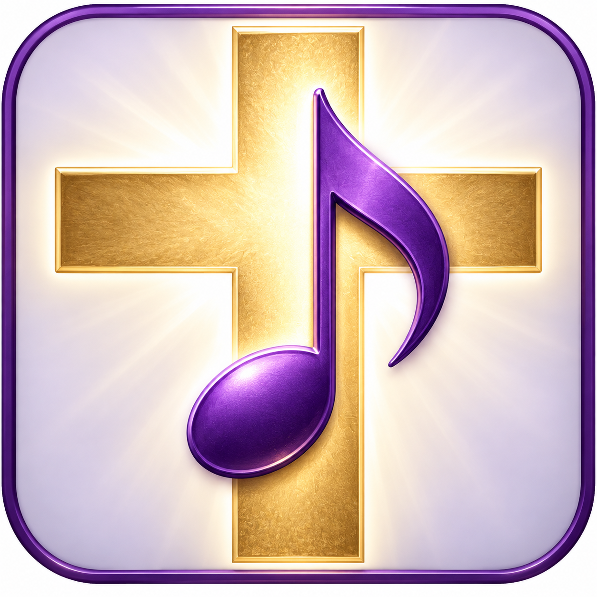
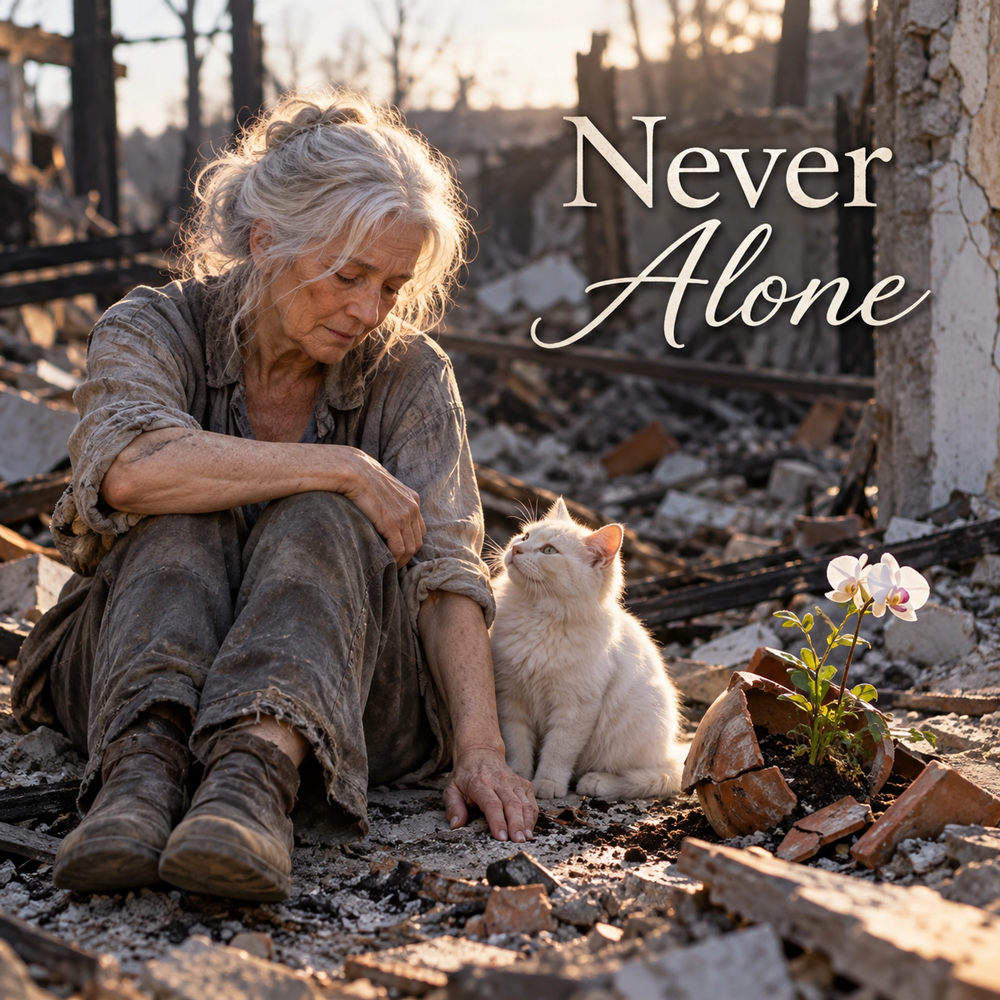

Never Alone

Want to download this song? Return to the Songs page, add this song to your playlist, then open My Playlist. Select the song and choose Download Song to review the Free Use agreement.
The Story Behind the Song
Many years ago, my husband was called on to donate a kidney to his seriously ill sister. This experience left me deeply concerned for him, especially for the pain he was enduring, frustrated, frightened, and overwhelmed.
One day, driving to the hospital later than before, I found myself in a greenhouse filled with beautiful orchids. Upon seeing the masses of them, I sat down and wept. There, among the flowers, with a cat nearby, I became aware of a warmth surrounding me and a quiet reassurance in my heart: “If I can do this, I can take care of him ... and you.”
On my way again, my circumstances had not suddenly changed. But I had left that moment with a peace I have never forgotten. More than thirty years later, the kidney Dean gave his sister is still working.
That experience became the song, Never Alone.
Lyrics
Verse 1
I sat down hard
My heart undone
Beneath the blooms that caught the sun
Their petals whispered soft and low
More than I'd ever need to know
Chorus
“You are not alone
Not ever alone
Trust me, don't weep
Let echoes sleep
You are never, ever alone”
Verse 2
The gravel breathed beneath my knees
The air was full of orchid breeze
A white cat blinked and stayed nearby
And watched the sorrow leave my eyes
Chorus
“You are not alone
Not ever alone
Trust me, don't weep
Let echoes sleep
You are never, ever alone”
Bridge
No thunder roared, no shadows moved
Just peace that deeply soothed
And in that hush I felt it clear
A love that won't disappear
Final Chorus
“You are not alone
Not ever alone
Trust me, don't weep
Let echoes sleep
You are never, ever alone”
Final Refrain
“You are not alone
Not ever alone
Trust me, don't weep
Let echoes sleep
You are never, ever alone
You are never, ever alone”
Devotional
Never Abandoned
God's promise is not that His children will never know sorrow. It is that sorrow cannot separate them from His faithful care. Scripture says, “I will never leave thee, nor forsake thee” (Hebrews 13:5). Those words are stronger than a passing feeling of comfort. They rest on the character of the One who speaks them.
The song, Never Alone, begins with a heart undone, in a place of flowers, sunlight, and quiet. Nothing spectacular interrupts the grief. Yet the repeated reassurance is unmistakable: “You are not alone.” The scene invites us to consider a God who is present even when nothing outwardly dramatic occurs.
Near to the Brokenhearted
David wrote, “The LORD is nigh unto them that are of a broken heart; and saveth such as be of a contrite spirit” (Psalm 34:18). The verse does not deny that hearts break. It declares that the Lord is near in precisely those circumstances.
I remember the orchids, the gravel, and the quiet cat nearby. I also remember the words I heard deep within me: “If I can do this, I can take care of him ... and you.” In the midst of my fear for my husband, those words brought a peace I have never forgotten. For decades I have told this story just as I experienced it. The flowers were the setting; the reassurance was what stayed with me.
Peace Without Thunder
“No thunder roared, no shadows moved.” That is an important distinction. We sometimes expect God to make Himself known through unmistakable spectacle. Yet when Elijah stood before the Lord, the account moves through wind, earthquake, and fire before describing “a still small voice” (1 Kings 19:11–12). Elijah’s account reminds me that quietness does not diminish the significance of what is heard.
Jesus told His disciples, “Peace I leave with you, my peace I give unto you” and “Let not your heart be troubled, neither let it be afraid” (John 14:27). His peace is not dependent upon the absence of pain. It is a gift anchored in Him. Those words of Christ speak directly to the peace I carried away from the greenhouse.
Love That Will Not Disappear
The bridge speaks of “a love that won't disappear.” Romans 8 gives that hope a firm foundation. Paul declares that neither death nor life, nor any other creature, “shall be able to separate us from the love of God, which is in Christ Jesus our Lord” (Romans 8:38–39). This assurance is specifically about God's love in Christ. It is not a general promise that circumstances will always feel gentle, or that grief will immediately lift.
Jesus also promised His followers, “I am with you alway, even unto the end of the world” (Matthew 28:20). His presence is not measured by how strongly we feel it on any particular day. When the heart is exhausted, His words remain true.
Let the Echoes Sleep
The chorus says, “Trust me, don't weep / Let echoes sleep.” We need not hear those lines as a command to suppress grief. Jesus Himself wept (John 11:35). The Psalms give us language for tears, questions, and lament. Trusting God does not require pretending the hurt has vanished.
Instead, the song can offer a gentle invitation to stop letting yesterday's pain speak the final word. “Casting all your care upon him; for he careth for you” (1 Peter 5:7) is not an instruction to become invulnerable. It is permission to bring the full weight of our concerns to the Lord. Sometimes peace comes slowly. Sometimes we must return to that invitation many times. His care does not diminish with our need.
And so the final refrain remains simple. Not a promise of a trouble-free life, but a reminder of the faithful Savior who does not abandon His own. In Christ, we may be sorrowful and still held, uncertain and still loved, quiet and never forsaken.
For Reflection
When have I mistaken the absence of a dramatic answer for the absence of God? What old sorrow or echo am I still carrying? Which promise from Scripture can I return to when I feel alone? Is there someone I can comfort with the same faithful truth?
Prayer
Father, when my heart is undone, help me remember what You have promised. Thank You for being near to the brokenhearted and for giving us Your Son, Jesus Christ. Teach me to distinguish Your sure Word from my changing feelings. Help me bring my grief honestly to You instead of hiding it.
Grant me peace in the quiet, patience when healing takes time, and confidence in the love that is ours in Christ. Make me attentive to those who are lonely, that I might share Your comfort with gentleness and truth. Amen.
Extra Info — Scripture Map
God's promise never to forsake His people: Hebrews 13:5–6
The Lord near the brokenhearted: Psalm 34:17–19
Elijah and the still small voice: 1 Kings 19:9–13
Christ's gift of peace: John 14:25–27
God's inseparable love in Christ: Romans 8:31–39
Christ's continuing presence: Matthew 28:18–20
Jesus wept: John 11:32–36
Bringing our cares to God: 1 Peter 5:6–7